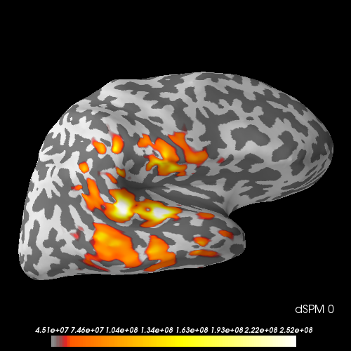

Note
Click here to download the full example code
Compute cross-talk functions (CTFs) for labels for MNE/dSPM/sLORETA¶
CTFs are computed for four labels in the MNE sample data set for linear inverse operators (MNE, dSPM, sLORETA). CTFs describe the sensitivity of a linear estimator (e.g. for one label) to sources across the cortical surface. Sensitivity to sources outside the label is undesirable, and referred to as “leakage” or “cross-talk”.

- 
Out:
Reading forward solution from /home/circleci/mne_data/MNE-sample-data/MEG/sample/sample_audvis-meg-eeg-oct-6-fwd.fif...
Reading a source space...
Computing patch statistics...
Patch information added...
Distance information added...
[done]
Reading a source space...
Computing patch statistics...
Patch information added...
Distance information added...
[done]
2 source spaces read
Desired named matrix (kind = 3523) not available
Read MEG forward solution (7498 sources, 306 channels, free orientations)
Desired named matrix (kind = 3523) not available
Read EEG forward solution (7498 sources, 60 channels, free orientations)
MEG and EEG forward solutions combined
Source spaces transformed to the forward solution coordinate frame
Reading inverse operator decomposition from /home/circleci/mne_data/MNE-sample-data/MEG/sample/sample_audvis-meg-oct-6-meg-inv.fif...
Reading inverse operator info...
[done]
Reading inverse operator decomposition...
[done]
305 x 305 full covariance (kind = 1) found.
Read a total of 4 projection items:
PCA-v1 (1 x 102) active
PCA-v2 (1 x 102) active
PCA-v3 (1 x 102) active
Average EEG reference (1 x 60) active
Noise covariance matrix read.
22494 x 22494 diagonal covariance (kind = 2) found.
Source covariance matrix read.
22494 x 22494 diagonal covariance (kind = 6) found.
Orientation priors read.
22494 x 22494 diagonal covariance (kind = 5) found.
Depth priors read.
Did not find the desired covariance matrix (kind = 3)
Reading a source space...
Computing patch statistics...
Patch information added...
Distance information added...
[done]
Reading a source space...
Computing patch statistics...
Patch information added...
Distance information added...
[done]
2 source spaces read
Read a total of 4 projection items:
PCA-v1 (1 x 102) active
PCA-v2 (1 x 102) active
PCA-v3 (1 x 102) active
Average EEG reference (1 x 60) active
Source spaces transformed to the inverse solution coordinate frame
Average patch normals will be employed in the rotation to the local surface coordinates....
Converting to surface-based source orientations...
[done]
About to process 4 labels
Preparing the inverse operator for use...
Scaled noise and source covariance from nave = 1 to nave = 1
Created the regularized inverter
Created an SSP operator (subspace dimension = 3)
Created the whitener using a noise covariance matrix with rank 302 (3 small eigenvalues omitted)
Applying inverse operator to ""...
Picked 305 channels from the data
Computing inverse...
Eigenleads need to be weighted ...
Computing residual...
Explained 45.0% variance
[done]
Dimension of inverse matrix: (7498, 306)
Computing SVD within labels, using 1 component(s)
First 5 singular values: [11650.27808851 7034.33675366 3267.03724057 2762.39609838
2221.0665056 ]
(This tells you something about variability of estimators in sub-inverse for label)
Your 1 component(s) explain(s) 63.6% variance in label.
Computing SVD within labels, using 1 component(s)
First 5 singular values: [8512.68820924 7872.78518609 6741.64926914 3353.04131104 2498.07715718]
(This tells you something about variability of estimators in sub-inverse for label)
Your 1 component(s) explain(s) 35.6% variance in label.
Computing SVD within labels, using 1 component(s)
First 5 singular values: [15630.02296497 7418.15820631 5346.56712701 4258.90971316
1958.40295249]
(This tells you something about variability of estimators in sub-inverse for label)
Your 1 component(s) explain(s) 69.4% variance in label.
Computing SVD within labels, using 1 component(s)
First 5 singular values: [18096.44764144 8773.30811442 4831.2396142 3456.55903612
3129.60231085]
(This tells you something about variability of estimators in sub-inverse for label)
Your 1 component(s) explain(s) 71.5% variance in label.
Average patch normals will be employed in the rotation to the local surface coordinates....
Converting to surface-based source orientations...
[done]
About to process 4 labels
Preparing the inverse operator for use...
Scaled noise and source covariance from nave = 1 to nave = 1
Created the regularized inverter
Created an SSP operator (subspace dimension = 3)
Created the whitener using a noise covariance matrix with rank 302 (3 small eigenvalues omitted)
Computing noise-normalization factors (dSPM)...
[done]
Applying inverse operator to ""...
Picked 305 channels from the data
Computing inverse...
Eigenleads need to be weighted ...
Computing residual...
Explained 45.0% variance
dSPM...
[done]
Dimension of inverse matrix: (7498, 306)
Computing SVD within labels, using 1 component(s)
First 5 singular values: [7.55262104e+13 5.83910239e+13 3.44075225e+13 2.36505439e+13
1.94336945e+13]
(This tells you something about variability of estimators in sub-inverse for label)
Your 1 component(s) explain(s) 48.7% variance in label.
Computing SVD within labels, using 1 component(s)
First 5 singular values: [9.07577774e+13 7.61818100e+13 5.75087046e+13 3.39598529e+13
2.66587446e+13]
(This tells you something about variability of estimators in sub-inverse for label)
Your 1 component(s) explain(s) 41.4% variance in label.
Computing SVD within labels, using 1 component(s)
First 5 singular values: [5.31303675e+13 4.01608741e+13 2.99674179e+13 2.09348683e+13
1.16746740e+13]
(This tells you something about variability of estimators in sub-inverse for label)
Your 1 component(s) explain(s) 47.2% variance in label.
Computing SVD within labels, using 1 component(s)
First 5 singular values: [9.06302929e+13 5.13491534e+13 3.33843084e+13 3.13749745e+13
1.90838680e+13]
(This tells you something about variability of estimators in sub-inverse for label)
Your 1 component(s) explain(s) 59.3% variance in label.
Using control points [0.00640675 0.00870059 0.03862131]
Using control points [4.50887830e+07 6.13848400e+07 2.51671797e+08]
# Author: Olaf Hauk <olaf.hauk@mrc-cbu.cam.ac.uk>
#
# License: BSD (3-clause)
import mne
from mne.datasets import sample
from mne.minimum_norm import cross_talk_function, read_inverse_operator
print(__doc__)
data_path = sample.data_path()
subjects_dir = data_path + '/subjects/'
fname_fwd = data_path + '/MEG/sample/sample_audvis-meg-eeg-oct-6-fwd.fif'
fname_inv = data_path + '/MEG/sample/sample_audvis-meg-oct-6-meg-inv.fif'
fname_evoked = data_path + '/MEG/sample/sample_audvis-ave.fif'
fname_label = [data_path + '/MEG/sample/labels/Aud-rh.label',
data_path + '/MEG/sample/labels/Aud-lh.label',
data_path + '/MEG/sample/labels/Vis-rh.label',
data_path + '/MEG/sample/labels/Vis-lh.label']
# read forward solution
forward = mne.read_forward_solution(fname_fwd)
# read label(s)
labels = [mne.read_label(ss) for ss in fname_label]
inverse_operator = read_inverse_operator(fname_inv)
# regularisation parameter
snr = 3.0
lambda2 = 1.0 / snr ** 2
mode = 'svd'
n_svd_comp = 1
method = 'MNE' # can be 'MNE', 'dSPM', or 'sLORETA'
stc_ctf_mne = cross_talk_function(
inverse_operator, forward, labels, method=method, lambda2=lambda2,
signed=False, mode=mode, n_svd_comp=n_svd_comp)
method = 'dSPM'
stc_ctf_dspm = cross_talk_function(
inverse_operator, forward, labels, method=method, lambda2=lambda2,
signed=False, mode=mode, n_svd_comp=n_svd_comp)
time_label = "MNE %d"
brain_mne = stc_ctf_mne.plot(hemi='rh', subjects_dir=subjects_dir,
time_label=time_label, figure=1, size=500)
time_label = "dSPM %d"
brain_dspm = stc_ctf_dspm.plot(hemi='rh', subjects_dir=subjects_dir,
time_label=time_label, figure=2, size=500)
# Cross-talk functions for MNE and dSPM (and sLORETA) have the same shapes
# (they may still differ in overall amplitude).
# Point-spread functions (PSfs) usually differ significantly.
Total running time of the script: ( 0 minutes 8.833 seconds)
Estimated memory usage: 9 MB